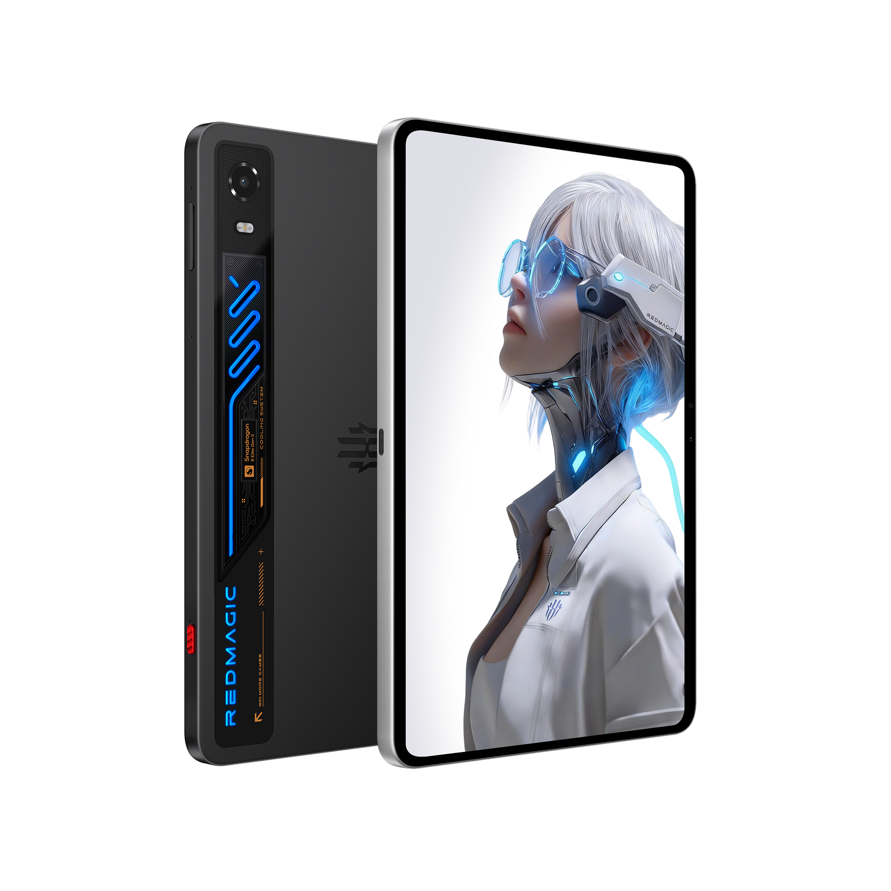
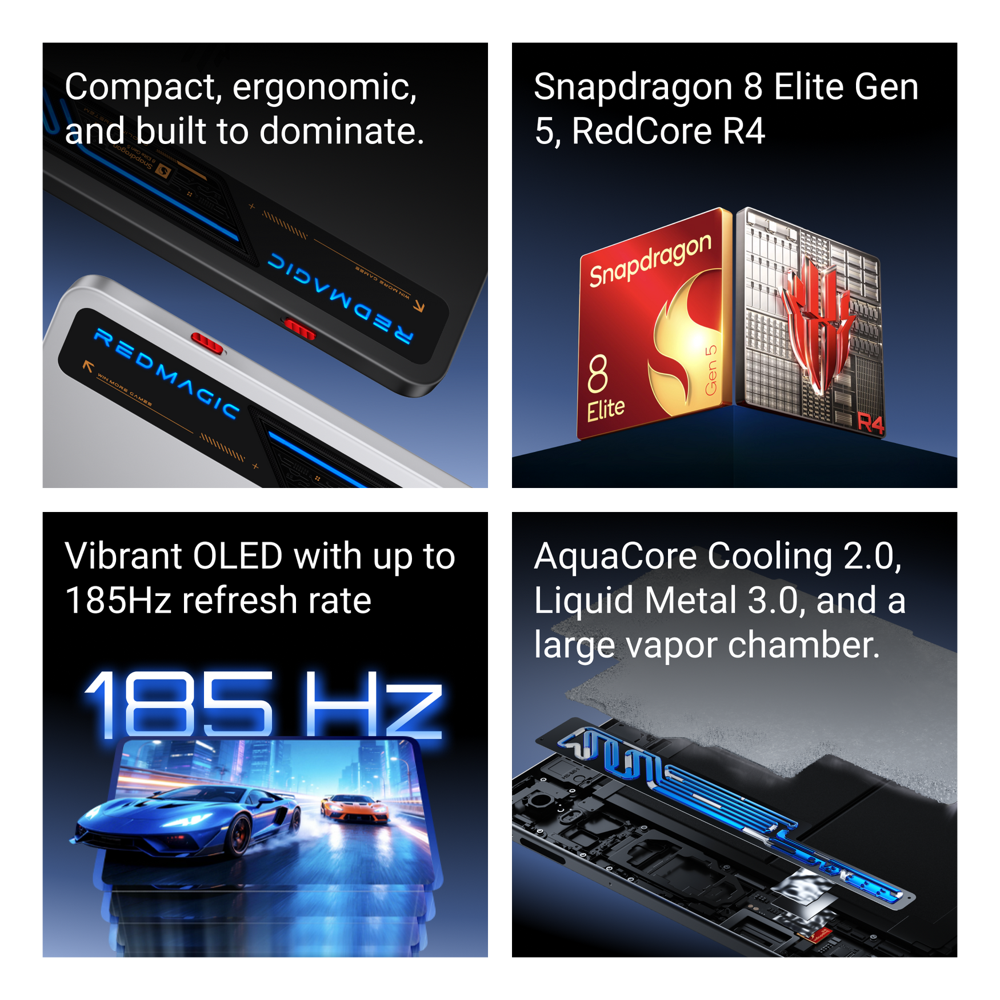
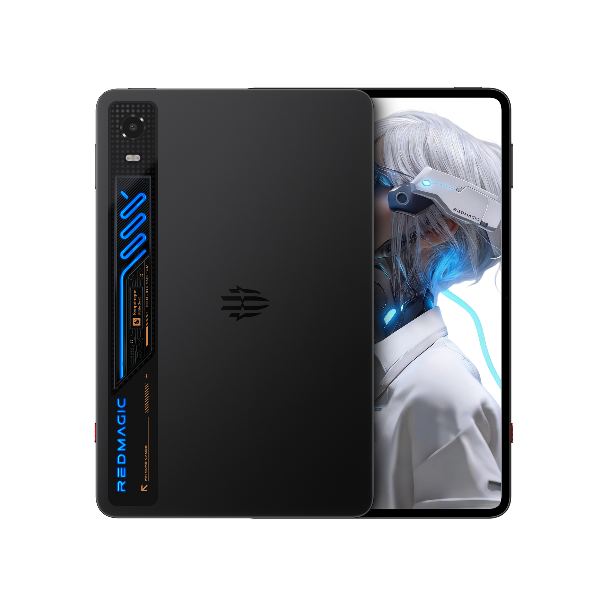
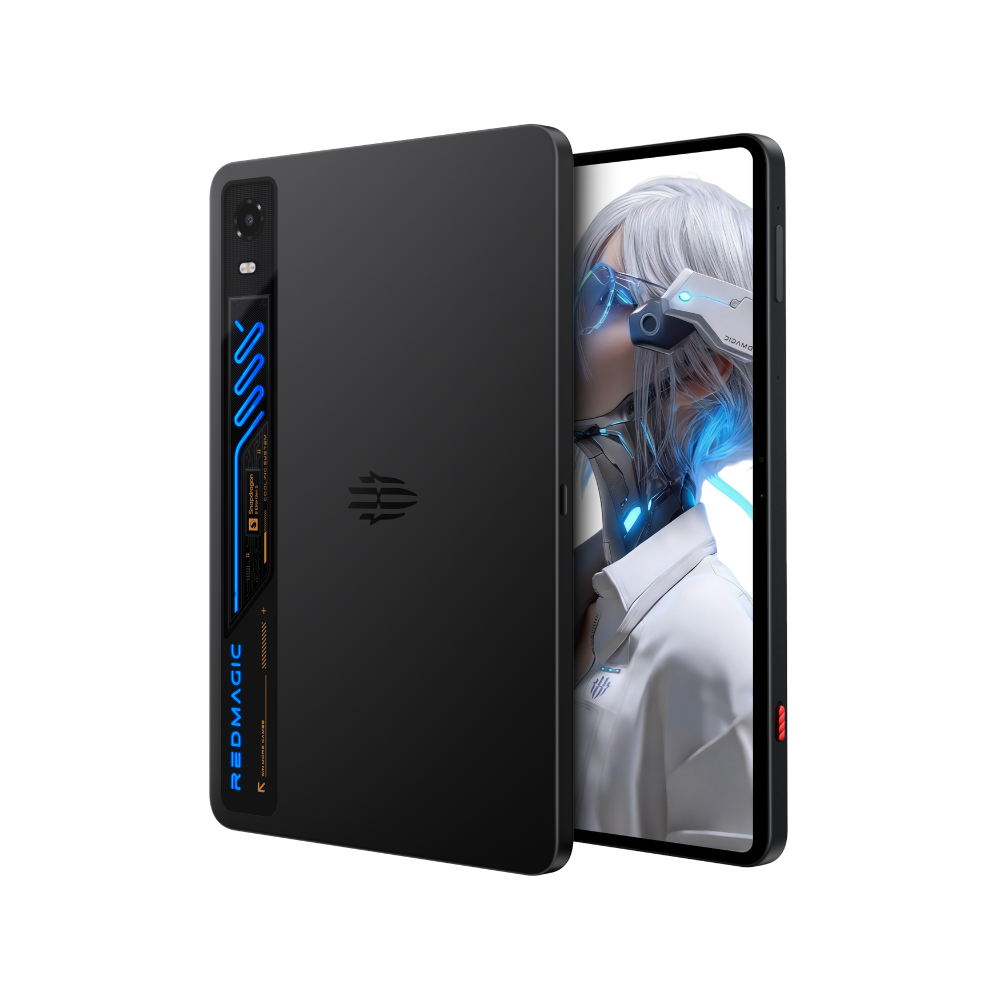
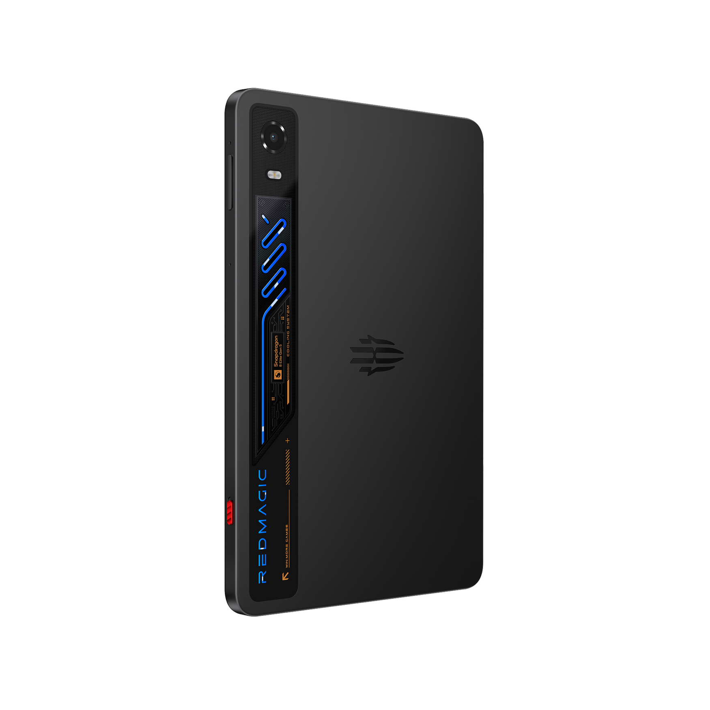
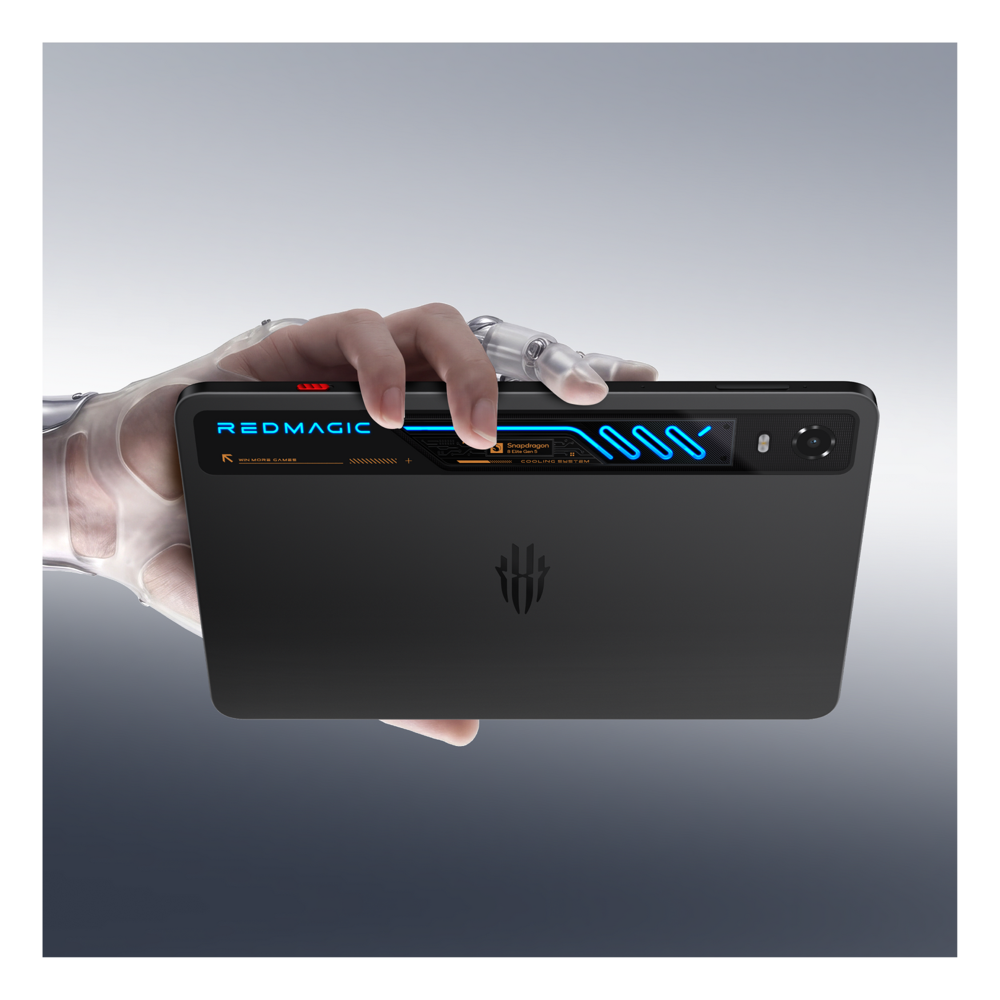

| Quick Bird

High-performance portable gaming hardware continues to reach unprecedented heights. The REDMAGIC Astra 2 Gaming Tablet is engineered specifically for hardcore gamers and power users, combining a sleek ergonomic build with desktop-grade processing muscle, an ultra-responsive high-refresh-rate display, and advanced thermal cooling systems.
Check specs and official prices:
More Details & Buying OptionsCompact Ergonomics and Elite Processing Power: Crafted with a premium finish, this tablet offers a compact and ergonomic design for comfortable handling during extended gaming sessions. Under the hood, it is driven by the formidable Snapdragon 8 Elite Gen 5 processor and RedCore R4 chip, backed by up to 16GB of RAM and 512GB of internal storage. Furthermore, it features an incredible 185Hz OLED display for butter-smooth visuals, complemented by AquaCore Cooling 2.0, Liquid Metal 3.0, and a massive vapor chamber to maintain peak performance under heavy loads.

Endurance, Connectivity, and Versatility: Powered by a reliable 8,300mAh battery supporting up to 75W fast charging, the device ensures minimal downtime between sessions. Equipped with dual USB-C ports, rich stereo audio output, and precise haptics, the REDMAGIC Astra 2 is built to seamlessly transition from intense mobile gaming to everyday productivity tasks.



